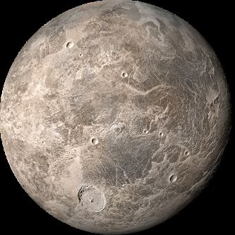
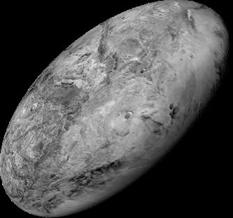
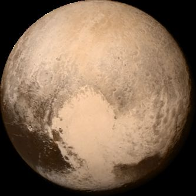

| Ceres | Haumea | Pluto | Makemake | |
|---|---|---|---|---|
| Images of planets |  |
 |
 |
|
| Name | Ceres is named for the Roman goddess of corn and harvests. The word cereal comes from the same name. | Haumea is named after the Hawaiian goddess of fertility. | Pluto was named by an 11-year-old girl. | Makemake was named after the Rapanui god of fertility. |
| Existence of life | Ceres is one of the few places in our solar system where scientists would like to search for possible signs of life. Ceres has something a lot of other planets don't: water | Haumea is extremely cold and doesn't appear to have conditions suitable for life. | The surface of Pluto is extremely cold, so it's unlikely that life could exist there. | Makemake is extremely cold, so it seems unlikely that life could exist there. |
| Size | A radius of 296 miles (476 kilometers), Ceres is 1/13 the radius of Earth. If Earth were the size of a nickel, Ceres would be about as big as a poppy seed. | With an equatorial diameter of about 1,080 miles (about 1,740 kilometers), Haumea is about 1/7 the width of Earth. | Pluto has an equatorial diameter of about 1,477 miles (2,377 kilometers). Pluto is about 1/5th the width of Earth. | With a radius of approximately 444 miles (715 kilometers), Makemake is 1/9 the radius of Earth. If Earth were the size of a nickel, Makemake would be about as big as a mustard seed. |
| Moons | Ceres does not have any moons. | Haumea has two known moons: Namaka is the inner moon, and Hi'iaka is the outer moon. | Pluto has five known moons: Charon, Nix, Hydra, Kerberos, and Styx. | Makemake has one provisional moon and it's nicknamed MK 2. |